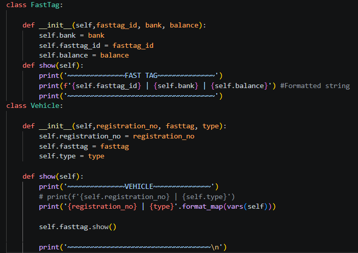
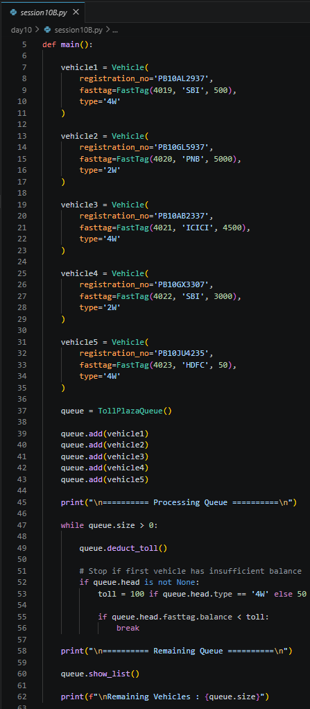
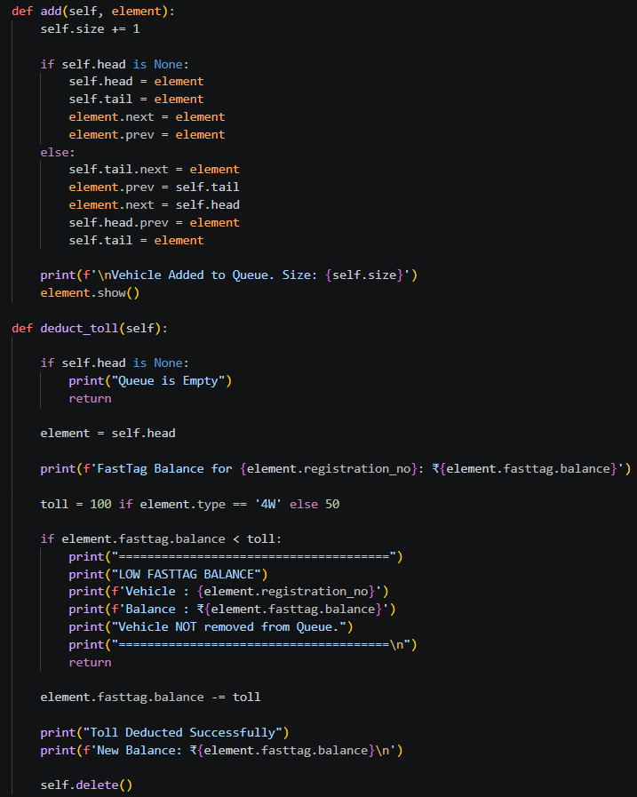
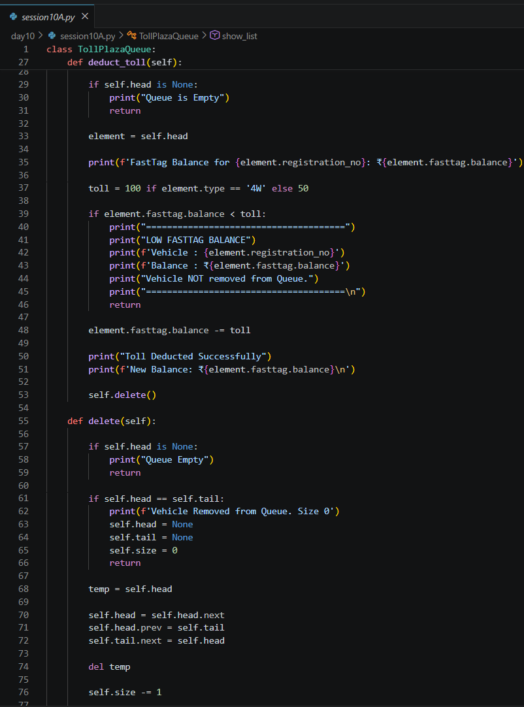
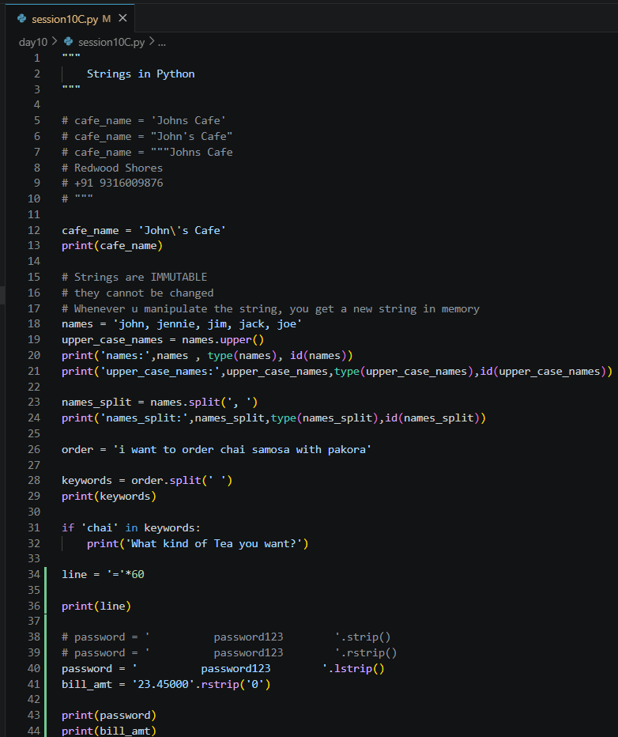
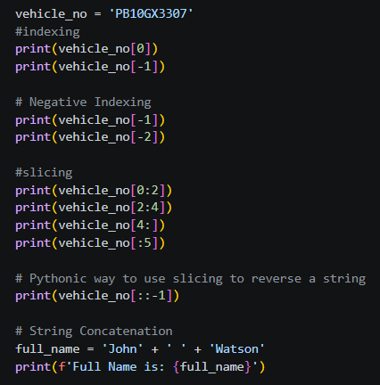

Date: 7th July 2026
Duration: 2:00 Hrs
Training Company: Auribises Technologies
Trainer: Ishant Kumar
Day 10 introduced two fundamental Computer Science topics—Stack & Queue Data Structures and Strings in Python. Rather than studying these concepts theoretically, the trainer demonstrated their practical applications by designing a real-world Toll Plaza Management System using Object-Oriented Programming.
The session began by revisiting object relationships through a Vehicle and FastTag model before implementing a queue that simulates vehicles arriving at a toll plaza. The second half of the class focused on Python strings, covering immutability, formatting techniques, indexing, slicing, and several commonly used string operations.
To understand Queue data structures, we first modeled a Toll Plaza Management System. Each vehicle was represented as an object containing its registration number, vehicle type, and a FastTag object. This demonstrated how one object can contain another object to model real-world relationships effectively.
The FastTag object stored details such as the FastTag ID, issuing bank, and available balance, while the Vehicle object maintained a reference to its associated FastTag.

Instead of implementing a queue using Python lists, we reused the Circular Doubly Linked List developed in previous sessions. The queue maintained references to the head (front) and tail (rear), allowing efficient insertion and deletion of vehicles while preserving the FIFO (First In, First Out) principle.
As vehicles entered the toll plaza, they were added to the rear of the queue. After toll deduction, the processed vehicle was removed from the front, closely simulating the workflow of an actual toll plaza.

Several essential queue operations were implemented during the session. These operations demonstrated how a Queue can be efficiently managed using object references instead of Python's built-in data structures.
The trainer also explained the relationship between Queues and Stacks by implementing separate deletion methods for FIFO (Queue) and LIFO (Stack) behavior using the same underlying data structure.

One of the most interesting parts of the session was implementing automatic toll deduction using the Queue data structure. Every vehicle entering the toll plaza was processed in the order of arrival. Depending on the vehicle type, the toll amount was deducted directly from its associated FastTag balance before the vehicle exited the queue.
The implementation demonstrated how Queue operations can automate real-world workflows while maintaining fairness through the FIFO (First In, First Out) principle. Four-wheelers and two-wheelers were charged different toll amounts based on predefined conditions.

The assignment extended the Toll Plaza Queue by introducing an exceptional scenario. Instead of always allowing vehicles to pass, the system needed to identify vehicles with insufficient FastTag balance.
If a vehicle did not have enough balance to pay the toll, it had to be highlighted and retained in the queue instead of being removed. This introduced conditional processing into the Queue implementation and simulated a realistic toll plaza workflow.
For my solution, I modified the toll deduction logic to validate the available FastTag balance before deducting the toll amount. Vehicles with sufficient balance completed the transaction successfully and were removed from the queue. If the balance was insufficient, the system displayed a warning message and prevented the vehicle from leaving the queue.
This enhancement demonstrated how Queue operations can incorporate real-world validation while preserving the integrity of the data structure and maintaining the correct processing order.
View Assignment Solution on GitHub
Before beginning string manipulation, the trainer introduced different techniques for formatting text in
Python. We explored formatted string literals (f-strings), the format()
method, and format_map(), which allow values stored in variables or dictionaries to be inserted
into strings in a clean and readable manner.
These formatting techniques improve code readability and are commonly used while generating reports, displaying object information, and creating user-friendly output.
The second half of the session focused on Python strings and their built-in operations. The trainer explained that strings are immutable, meaning their contents cannot be modified directly. Instead, every string manipulation operation creates a new string object in memory.
Several useful string operations were demonstrated, including converting text to uppercase, splitting strings into lists, searching for keywords using the membership operator, and validating user input through simple conditions.
The session also covered indexing, negative indexing, slicing, reversing strings using Python's slicing
syntax, string concatenation, and removing unnecessary whitespace using methods such as
strip(), lstrip(), and rstrip().


f-strings, format(),
and format_map().Day 10 demonstrated how data structures become significantly more meaningful when applied to practical problems instead of isolated examples. Designing a Toll Plaza Management System using Queue operations helped me understand how the FIFO principle works in real-world scenarios and how Object-Oriented Programming can be combined with data structures to build modular applications.
The assignment further strengthened my understanding by introducing an exceptional case where vehicles with insufficient FastTag balance remained in the queue instead of being processed. Implementing this validation required thinking beyond basic Queue operations and applying logical conditions to handle real-life situations.
The session concluded with Python strings, where I learned that strings are immutable objects and explored several commonly used operations such as formatting, slicing, splitting, reversing, and trimming whitespace. These concepts are essential for everyday Python programming and will be useful while developing larger applications throughout the training.
The next session will continue building on Python programming and data structures by introducing more advanced concepts, allowing us to solve increasingly complex real-world problems while writing cleaner, more efficient, and reusable code.